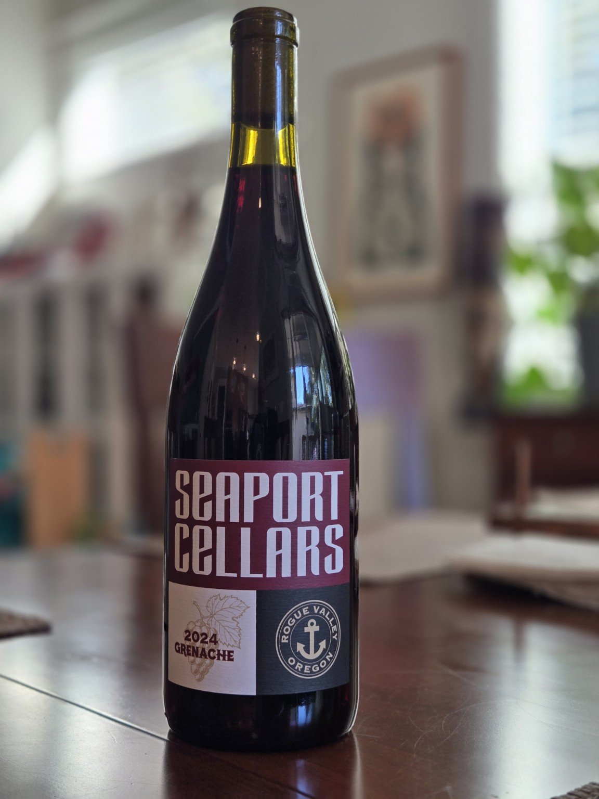
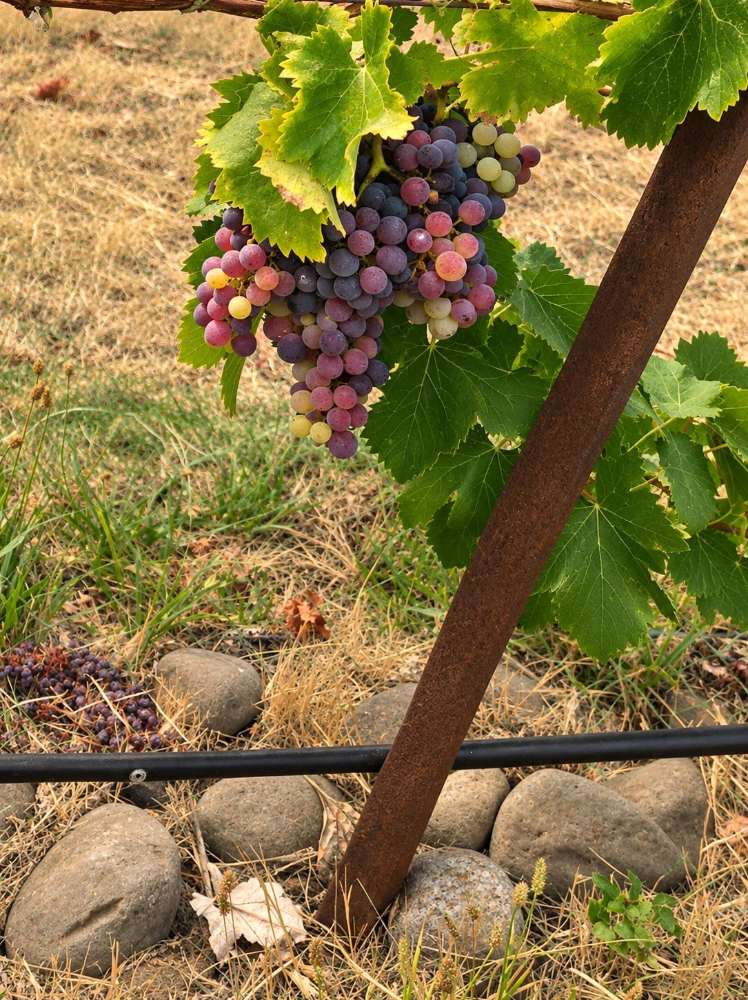

2024 Rogue Valley Grenache
Our inaugural release: fragrant, elegant and ready to enjoy.
Explore the 2024A passion for Grenache and the remarkable vineyards of the Pacific Northwest. Small-batch wines that express the character of their origins, crafted with care in Carlton, Oregon.
Discover Our Wines
Our inaugural release: fragrant, elegant and ready to enjoy.
Explore the 2024
A darker, structured expression, with anticipated bottling in December 2026.
Explore the 2025